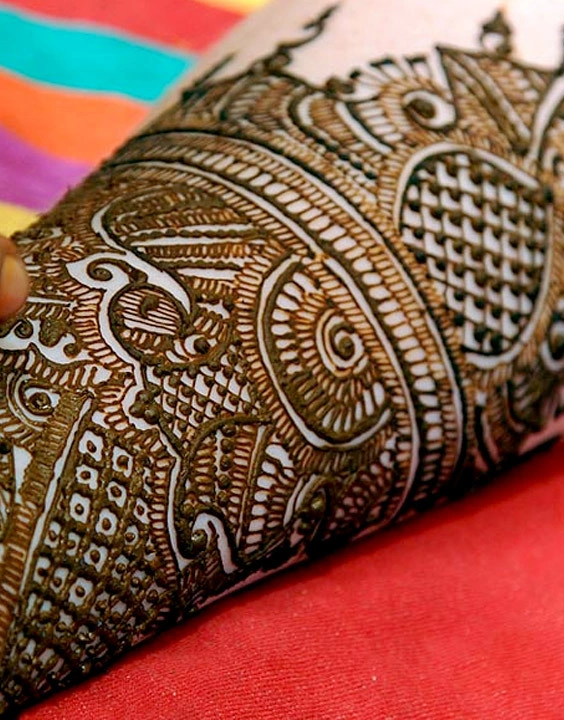

Features bold outlines and negative space, combining floral and geometric elements for a
striking but simple look
Spiral and swirl:
Minimalistic and chic, this design uses abstract circular patterns to create a
captivating look.
Wedding Mehndi
We don’t want to be biased but it cannot be denied that the charm of this beautiful style
is incomparable.
Indian
mehndi designs are elaborate and condensed at the same time. The detailing is close to finesse and every element
of the design holds great meaning.
These designs are very popular during traditional celebrations like Diwali and Karva chauth. They are also a
favourite with brides. Indian mehndi designs feature beautiful art inspired by earth, nature and emotions.
Birds and animals, the sun, Kalash, bride and groom figures are featured quite often in Indian wedding mehandi
designs.

Indo Arabic Mehndi
Fusion is a great way of bringing the best of two worlds together and the Indo Arabic
Mehndi designs for hands
are pretty good examples of fusion brought to fruition.
These fusion mehndi designs are a showcase of the best of Indian and Arabic designs. Indo Arabic mehndi designs
for hands often feature a pairing of Indian floral patterns and birds with Arabic cashew and shading.
We don’t know who started this trend, we are just glad that somebody did!